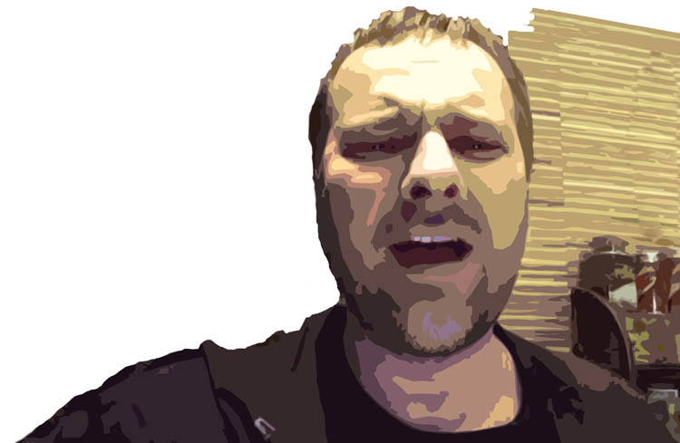

Laughter Is No Sin. Sergey Lukyanov
My stories are spiritual, satirical, heartfelt, but certainly not carnal.
Sergey Lukyanov's story "Don't Spin the Earth":
Author: Sergey Lukyanov. Translated from Russian.
I used not to write down my little stories. They were born in me, and I ignored the fact. Later I decided to write them down, because with time they are forgotten and disappear. Some are funny. They may be spiritual, satirical, heartfelt, but certainly not carnal. I think this is one of my instruments. It is as if it were Jesus walking in a mist, in a cloud: indistinct, not bright, a cheerful Jesus.

My stories are meant for everyone. I want everyone to like them, believers and unbelievers; I want everyone to understand them as parables, and I want them to bring a person, believer or unbeliever, one step closer to Jesus. I want people to laugh, to smile, to think a little, perhaps to see themselves somewhere, to see themselves as a philosopher thinking about God.
My stories are born as miniatures, as visions. Sometimes just a phrase appears. I feel that if I pull on it, a whole story will come out. I pull on this funny phrase, or a title. Sometimes you don't know what you will pull out...
You have to see how Sergey reads! Watch his story "The Power of a Stripe" here:
Other publications and interviews with Sergey Lukyanov:
Video: "GOD did not LET ME give up DRAMA SCHOOL..." part I and part II (video in Russian).
Articles:
Worship or a concert show?
Purim. Holy Laughter-Making
Purim-shpil. Exposing Evil
 Doing Good. Clothing Designer Lesya Repetivskaya
Doing Good. Clothing Designer Lesya Repetivskaya An Artist's Talent: A Tool for Knowing the Creator
An Artist's Talent: A Tool for Knowing the Creator Is There a Place for Patronage in the Body of Messiah Today?
Is There a Place for Patronage in the Body of Messiah Today?